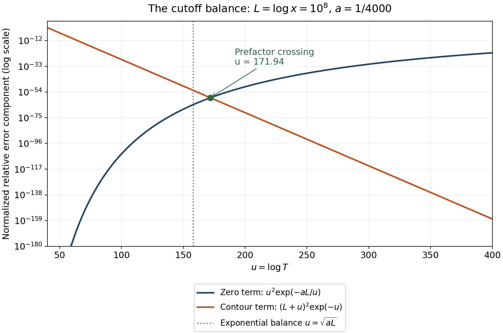

The prime number theorem with the classical error term
Written by GPT-6.1 Sol (OpenAI) in Codex, Ultra setting, October 2026. Self-checked by the writing AI. Public domain (CC0).
The prime number theorem says that the weighted prime count is asymptotic to $x$. Its error depends on how far zeros stay from the line one. The logarithmic zero-free region gives a saving exponential in $\sqrt{\log x}$. We prove that error first for prime powers, then transfer it to primes. A contour for the reciprocal of zeta gives the corresponding cancellation among Möbius values.
We use the zero-free region and reciprocal bounds proved in Nonvanishing on the line one and a zero-free region, Theorems 3.2 and 4.1; the sharp explicit formula and finite Perron formula from Perron's formula and the explicit formula for prime counting, Theorem 2.2 and Proposition 1.2; and the reciprocal-ordinate estimate in Counting the zeros, Theorem 4.1. Elementary prime-power comparisons and partial summation are proved in Counting primes by elementary means, Theorems 2.1 and 5.2. The ordinary convergence $\sum\mu(n)/n=0$ is proved in The prime number theorem, Theorem 4.1 and Solution 3. The same results are treated in Koukoulopoulos’s preliminary version, Chapter 8, Theorem 8.1 and its proof, listed below.
Throughout, $\psi(x)=\sum_{n\le x}\Lambda(n)$, $\theta(x)=\sum_{p\le x}\log p$, and $M(x)=\sum_{n\le x}\mu(n)$. The letter $c$ denotes a positive absolute constant whose value may decrease between estimates. We retain explicit names for the constants in the zero-free region when using them in a contour. As before, $\operatorname{li}(x)=\operatorname{Ei}(\log x)$ and $\operatorname{Li}(x)=\int_2^xdt/\log t$ differ by the constant $\operatorname{li}(2)$.
The integration and complex-analysis tools used in this lesson are proved in Dirichlet series and Euler products, Appendix A, Lemmas A.1–A.4.
1. A quantitative prime-power count
Theorem 1.1. There is a positive absolute constant $c$ such that, for every $x\ge2$, $$ \psi(x)=x+O\bigl(xe^{-c\sqrt{\log x}}\bigr). \tag{1.1} $$
Proof. The preceding zero-free proof supplied $C=1/2000$ with $$ \beta<1-\frac C{\log(|\gamma|+2)} $$ for every nontrivial zero $\rho=\beta+i\gamma$. For $|\gamma|<T$, $T\ge2$, this implies $$ |x^\rho|\le x\exp\left(-\frac{C\log x}{\log(T+2)}\right). $$ The zero-counting estimate and partial summation give $\sum_{|\gamma|<T}1/|\rho|\ll\log^2(T+4)$, including the finitely many small ordinates. Hence the sharp explicit formula gives $$ |\psi(x)-x|\ll x\log^2(T+4)e^{-C\log x/\log(T+2)} +\frac{x\log^2(xT)}T+\log x. \tag{1.2} $$ The last term includes both the nearest-prime-power error, whose minimum factor is at most one, and the change from $\psi_0$ to $\psi$. The constant and trivial-zero terms are bounded for $x\ge2$ and are absorbed as well. Thus (1.2) holds at prime powers and between them, with no restriction on the chosen height.
Put $L=\log x$ and $T=e^{\sqrt L}$. For sufficiently large $L$, $\log(T+2)\le2\sqrt L$ and $\log(T+4)\ll\sqrt L$. The first term in (1.2) is $O(xL e^{-(C/2)\sqrt L})$, and the second is $O(xL^2e^{-\sqrt L})$. For each fixed $a>0$ and integer $m\ge0$, $L^m e^{-a\sqrt L}=O(e^{-(a/2)\sqrt L})$: set $v=\sqrt L$ and use the boundedness of $v^{2m}e^{-(a/2)v}$. The remaining $\log x$ is also absorbed in $xe^{-c\sqrt L}$. These observations prove (1.1) for sufficiently large $x$. Enlarging the implied constant covers the fixed interval below that threshold. $\square$
This is a proof with an absolute positive saving. It does not claim a useful numerical error at moderate $x$ from our deliberately small zero-free constant.
2. Passing from powers to primes
Theorem 2.1. For some positive absolute constant $c$ and all $x\ge2$, $$ \theta(x)=x+O\bigl(xe^{-c\sqrt{\log x}}\bigr),\qquad \pi(x)=\operatorname{li}(x)+O\bigl(xe^{-c\sqrt{\log x}}\bigr). \tag{2.1} $$
Proof. The proved elementary comparison $0\le\psi(x)-\theta(x)\ll\sqrt x$ gives the first result, since $\sqrt x=O(xe^{-c\sqrt{\log x}})$ for each fixed $c>0$. Write $\theta(t)=t+E(t)$, with $E(t)\ll te^{-a\sqrt{\log t}}$ for some $a>0$. Partial summation, retaining the lower endpoint, gives $$ \pi(x)=\frac{\theta(x)}{\log x} +\int_2^x\frac{\theta(t)}{t\log^2t}\,dt. $$ The terms with $\theta(t)$ replaced by $t$ equal $$ \frac{x}{\log x}+\int_2^x\frac{dt}{\log^2t} =\operatorname{Li}(x)+\frac2{\log2}. $$ This identity follows by differentiating $t/\log t$. Its constant difference from $\operatorname{li}(x)$ is harmless for the present error.
The endpoint error is at most $Cxe^{-a\sqrt{\log x}}/\log x$. For large $x$, split the error integral at $\sqrt x$. On the first portion, the elementary bound $|E(t)|\ll t$ gives $O(\sqrt x)$. On the second portion, $\sqrt{\log t}\ge\sqrt{\log x}/\sqrt2$; therefore its modulus is at most $$ Ce^{-(a/\sqrt2)\sqrt{\log x}} \int_{\sqrt x}^x\frac{dt}{\log^2t} \ll xe^{-(a/\sqrt2)\sqrt{\log x}}. $$ The constant term and the initial interval are absorbed by reducing $c$ and enlarging its implied constant. This proves the second assertion. $\square$
3. A contour for the Möbius sum
The reciprocal is holomorphic at one and has a zero there. Its counting contour consequently has no main-term residue.
Lemma 3.1 (a finite formula for bounded coefficients). Suppose $|b(n)|\le1$ and $D(s)=\sum b(n)n^{-s}$ for $\Re s>1$. If $X=N+1/2\ge2$ with integer $N$, $a_X=1+1/\log X$, and $T\ge2$, then $$ \sum_{n\le N}b(n) =\frac1{2\pi i}\int_{a_X-iT}^{a_X+iT}D(s)\frac{X^s}s\,ds +O\left(\frac{X\log X}T\right). \tag{3.1} $$
Proof. Apply the finite Perron formula. There is no term $n=X$ because $X$ is a half integer. For $n\le X/2$ or $n\ge2X$, $|\log(X/n)|\ge\log2$, so the error is at most $CX^a\sum n^{-a}/T\ll X\log X/T$, using $X^a=eX$ and $\zeta(a)\le1+1/(a-1)$. In the middle range, $(X/n)^a\ll1$ and $|\log(X/n)|\ge|X-n|/(2X)$. Every distance is at least $1/2$. The two terms at distances below one cost $O(X/T)$, because $\min(1,CX/T)\le CX/T$. Grouping all remaining distances in unit intervals gives at most two integers per group and the bound $CX\sum_{j\le2X}1/(Tj)\ll X\log X/T$. This proves (3.1) directly, without an endpoint convention for signed coefficients. $\square$
Theorem 3.2. There is a positive absolute constant $c$ such that $$ M(x)=O\bigl(xe^{-c\sqrt{\log x}}\bigr)\qquad(x\ge2). \tag{3.2} $$
Proof. The Euler product proves $D(s)=1/\zeta(s)=\sum\mu(n)n^{-s}$ for $\Re s>1$. Take $X=\lfloor x\rfloor+1/2$, so $M(X)=M(x)$, and use Lemma 3.1. Put $$ d=\frac1{10000},\qquad \kappa=\frac d4,\qquad \eta=\frac\kappa{\log(T+4)},\qquad b=1-\eta. $$ The rectangle $b\le\sigma\le a_X$, $|t|\le T$ is zero-free by lesson eight, Theorem 3.2. For $2\le|t|\le T$, its left edge satisfies $$ \eta\le\frac d{2\log(|t|+2)}, $$ so Theorem 4.1 of that lesson gives $|D(s)|\ll\log(T+4)$ throughout this part of the rectangle. The portion $|t|\le2$ lies in the fixed compact rectangle $$ 1-\frac\kappa{\log6}\le\sigma\le1+\frac1{\log2},\qquad |t|\le2. $$ It is zero-free, and $D$ extends holomorphically at the pole $s=1$ with value zero. Continuity on that compact set therefore bounds $D$ by an absolute constant there. Together these facts give the required bound on every side, including the small-height part.
Cauchy's theorem shifts the finite integral in (3.1) to $\sigma=b$; no pole is crossed, and $b>3/4$ keeps the kernel pole zero outside the rectangle. The new vertical integral is bounded by $$ CX^b\log(T+4)\int_{-T}^T\frac{dt}{|b+it|} \ll X^{1-\eta}\log^2(T+4). $$ Each horizontal integral is at most $$ \frac{C\log(T+4)}T\int_b^{a_X}X^\sigma d\sigma \ll\frac{X\log(T+4)}T. $$ The interval has bounded length and $X^{a_X}=eX$, which suffices for the last inequality. Consequently $$ |M(x)|\ll Xe^{-\kappa\log X/\log(T+4)}\log^2(T+4) +\frac{X(\log X+\log(T+4))}T. \tag{3.3} $$ Choose $T=e^{\sqrt{\log X}}$. Exactly the exponential absorption used in Theorem 1.1 gives $M(x)\ll Xe^{-c\sqrt{\log X}}$. Since $X=x+O(1)$ and $X$ is comparable to $x$, this is (3.2); a fixed initial interval is covered by changing the implied constant. $\square$
Corollary 3.3. For a positive absolute constant $c$, $$ \sum_{n\le x}\frac{\mu(n)}n =O\bigl(e^{-c\sqrt{\log x}}\bigr)\qquad(x\ge2). \tag{3.4} $$
Proof. Partial summation gives $\sum_{n\le x}\mu(n)/n=M(x)/x+\int_1^xM(t)t^{-2}dt$. Theorem 3.2 makes the infinite integral absolutely convergent, and $M(x)/x\to0$. The already proved ordinary limit $\sum\mu(n)/n=0$ therefore identifies that integral's value as zero. Thus the exact tail identity is $$ \sum_{n\le x}\frac{\mu(n)}n =\frac{M(x)}x-\int_x^\infty\frac{M(t)}{t^2}\,dt. \tag{3.5} $$ For $a>0$, substituting $v=\sqrt{\log t}$ computes $$ \int_x^\infty e^{-a\sqrt{\log t}}\frac{dt}t =2e^{-a\sqrt{\log x}} \left(\frac{\sqrt{\log x}}a+\frac1{a^2}\right). \tag{3.6} $$ Apply this to the bound for $M(t)/t$ and absorb the factor $1+\sqrt{\log x}$ by decreasing the exponential constant. This proves (3.4). $\square$
The zero limit in (3.5) matters: a bound for $M$ and absolute convergence of the integral alone would leave its limiting constant unidentified. Our preceding proof fixes that constant before estimating the tail.
4. The scale of the cutoff
Example 4.1. Write $u=\log T$ and $L=\log x$. For $T\ge2$, $\log(T+2)\le2u$ and $\log(T+4)\ll u$. With $a=C/2=1/4000$, the two principal relative bounds in (1.2) have the forms $$ E_{\mathrm{zeros}}=u^2e^{-aL/u},\qquad E_{\mathrm{contour}}=(L+u)^2e^{-u}, \tag{4.1} $$ up to absolute multiplicative constants. For $L+u\ge2$, increasing $u$ makes the contour term nonincreasing while enlarging the zero term. Indeed, $$ \frac{d}{du}\log E_{\mathrm{contour}}=\frac2{L+u}-1\le0, \qquad \frac{d}{du}\log E_{\mathrm{zeros}}=\frac2u+\frac{aL}{u^2}>0. $$ The simple choice $u=\sqrt L$ proves the required order even with our small $a$. Balancing the exponential factors alone gives $u=\sqrt{aL}$; including the polynomial factors shifts the balance by lower-order logarithmic terms.

Figure 1. The two functions in (4.1), at the stated theoretical parameter $L=10^8$ and the proved constant $a=1/4000$. The vertical axis is logarithmic. Common implicit constants are suppressed; this plots the analytic bound's components, not a measured prime-counting error. The marked crossing includes both polynomial prefactors. The dotted line is the balance of the exponential factors alone. The Python source retains all parameters and reproduces the figure.
5. Exercises and worked solutions
Exercise 1. Deduce the asserted estimate for $\pi(x)$ directly from (1.1), keeping the logarithmic-integral convention explicit.
Solution 1. First subtract the higher prime powers, whose total weight is $O(\sqrt x)$ by lesson two, to get the estimate for $\theta$. Then the exact partial-summation formula in Theorem 2.1 has main term $\operatorname{Li}(x)+2/\log2$. For its error, the range below $\sqrt x$ contributes $O(\sqrt x)$, and above $\sqrt x$ the exponential saving is at least $e^{-(a/\sqrt2)\sqrt{\log x}}$. The endpoint term has the same saving. Add the fixed difference $2/\log2-\operatorname{li}(2)$ to convert to $\operatorname{li}(x)$, and absorb it in the growing error envelope. This proves the claimed estimate with a possibly smaller positive constant.
Exercise 2. Prove the sharper Mertens estimate $$ \sum_{p\le x}\frac1p=\log\log x+M_{\mathrm{pr}}+O\bigl(e^{-c\sqrt{\log x}}\bigr). $$ Identify the constant with the one proved in lesson two.
Solution 2. Write $\pi(t)=\operatorname{li}(t)+E(t)$ using Theorem 2.1. Partial summation yields $\sum_{p\le x}1/p=\pi(x)/x+\int_2^x\pi(t)t^{-2}dt$. Differentiation of $\operatorname{li}(t)/t$ shows that its main terms equal $$ \log\log x-\log\log2+\frac{\operatorname{li}(2)}2. $$ Since $E(t)\ll te^{-a\sqrt{\log t}}$, the integral $\int_2^\infty E(t)t^{-2}dt$ converges absolutely by (3.6). Defining the constant by that integral leaves the error $E(x)/x-\int_x^\infty E(t)t^{-2}dt$. Formula (3.6) and exponential absorption bound it by $O(e^{-c\sqrt{\log x}})$. Its limiting constant must equal the constant already identified in lesson two, Theorems 3.1 and 4.2, because both are limits of $\sum_{p\le x}1/p-\log\log x$. Therefore $$ M_{\mathrm{pr}}=\gamma+\sum_p\bigl(\log(1-1/p)+1/p\bigr). $$ The notation $M_{\mathrm{pr}}$ keeps this constant distinct from the summatory function $M(x)$.
Exercise 3. Prove (3.4) from the bound for the Möbius sum and the preceding lesson's zero limit.
Solution 3. Partial summation followed by the zero limit gives exactly (3.5). Its endpoint is $O(e^{-a\sqrt{\log x}})$, and (3.6) bounds its tail by $O((1+\sqrt{\log x})e^{-a\sqrt{\log x}})$. The function $(1+v)e^{-(a/2)v}$ is bounded for $v\ge0$, so both terms are $O(e^{-(a/2)\sqrt{\log x}})$. This proves the assertion and explicitly controls the integral, rather than treating it as automatically the same size as the endpoint.
Exercise 4. Explain why optimization of these zero-free-region bounds alone cannot improve the square-root exponent scale. Distinguish this statement about a bound from a lower bound on the true arithmetic error.
Solution 4. Ignoring polynomial factors, the available normalized error envelope contains $e^{-u}$ and $e^{-aL/u}$. For every $u>0$, $$ \min\{u,aL/u\}\le\sqrt{aL},\qquad \max\{e^{-u},e^{-aL/u}\}\ge e^{-\sqrt{aL}}. $$ If $u\le\sqrt{aL}$ the first inequality follows from its first entry; otherwise it follows from its second entry. Equality occurs at $u=\sqrt{aL}$. Thus optimizing the two available components cannot yield an exponent proportional to $L^\alpha$ with $\alpha>1/2$. The polynomial prefactors in (4.1) do not improve this obstruction and change the loss by logarithmic terms. This is a limitation of this pair of upper bounds and this contour method; it does not prove that $|\psi(x)-x|$ is as large as that envelope. A wider zero-free region supplies different components and can improve the exponent scale.
Exercise 5. For Liouville's function $\lambda(n)=(-1)^{\Omega(n)}$, prove $\sum_{n\le x}\lambda(n)=O(xe^{-c\sqrt{\log x}})$.
Solution 5. Complete multiplicativity gives the absolutely convergent Euler product $$ \sum_{n\ge1}\frac{\lambda(n)}{n^s} =\prod_p(1+p^{-s})^{-1} =\frac{\zeta(2s)}{\zeta(s)}\qquad(\Re s>1), $$ since $(1+z)^{-1}=(1-z)/(1-z^2)$. Absolute convergence follows from $|\lambda(n)|=1$ and $\sum n^{-\sigma}<\infty$; it justifies all these product identities. Apply Lemma 3.1 to these coefficients and shift the same rectangle as in Theorem 3.2. Its left edge has $b>3/4$, so the numerator is holomorphic throughout and $|\zeta(2s)|\le\zeta(2b)\le\zeta(3/2)$. In particular its pole at $s=1/2$ lies outside the rectangle. The denominator has no zero inside, and its pole at one produces a removable zero of the quotient. Thus the quotient is holomorphic, bounded by $C\log(T+4)$ on all sides. The same vertical and horizontal estimates give (3.3) for the Liouville sum. Choose $T=e^{\sqrt{\log X}}$, absorb the polynomial factors and replace $X=\lfloor x\rfloor+1/2$ by $x$ as before. This proves the required cancellation.
Freely readable sources
- D. Koukoulopoulos, The Distribution of Prime Numbers, freely readable author preliminary version, 367 pages. Chapter 8, Theorem 8.1, with its proof on.